M11流民林路
主线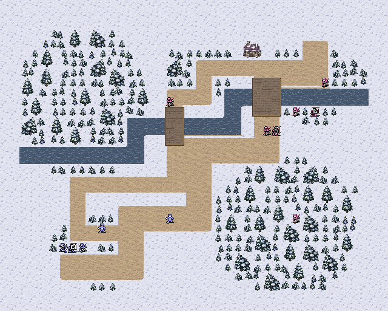
15 个战场重新编排地形与通路。普通建筑是可占据的单格地形；较大的访问建筑保留完整外观、明确门口和门前交互。每张全景均由 Godot 实际视口捕获，点击可查看完整原图。
0.3.6：旧塔堡使用草岸与岩岸，移除误铺的断续沙色边条；真正的沙滩补上沙地到草地的像素过渡。木栈道、码头和木桥增加木板方向、边梁与端头，地形说明按实际用途命名。本轮全部15关仅修改显示，通行、碰撞、移动消耗和人物位置不变。
0.3.5：旧塔外营改为南营、东营两处道路哨卡。两侧木栅明确阻挡，南路保留三格宽、东路两格宽通行口；站到军旗格选择控制，红旗会变蓝旗。移除树林中孤立栅栏，控制点均落在真实道路上。本关补测第10回合通关，其余14张地图未改。
0.3.4：营垒、军帐、舵楼哨位改用完整单格战场素材，普通建筑统一16×16画布并充满主要轮廓。重排6关的11处营垒/屋舍，22处可占据建筑均连通现有道路或甲板。南岗三处岗堡分别守护西囚区、东囚区和内庭，已按真实输入补测14回合胜利。
0.3.3：山地采用灰褐色碎岩底纹与坡脚过渡；建筑地面、海崖背后的水面与碰撞分开处理，消除紫色碎块。全景不显示操作光标，实机白色箭头仅表示当前操作位置；常驻任务箭头已移除，目标用途在地块说明和行动菜单中显示。
0.3.0 两轮逐关按键试玩共 30 次胜利；首次主动接战在第 3—5 回合。试玩从真实战役存档经整备重新入场，保留原属性和随机结果。81 张实机图的文字安全区检查为 0 错误。本次 0.3.1 仅重做 M11 河道，补测第 20 回合完成护送；其他14关布局未改。0.3.2 已移除14处访问建筑的叠加门，并核对原生入口交互；地形和战斗参数未改。

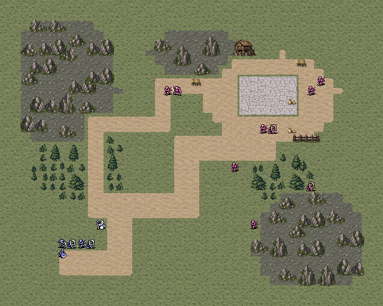
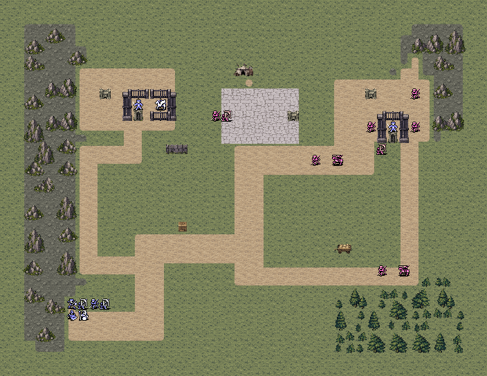
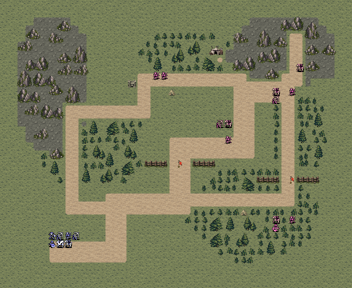
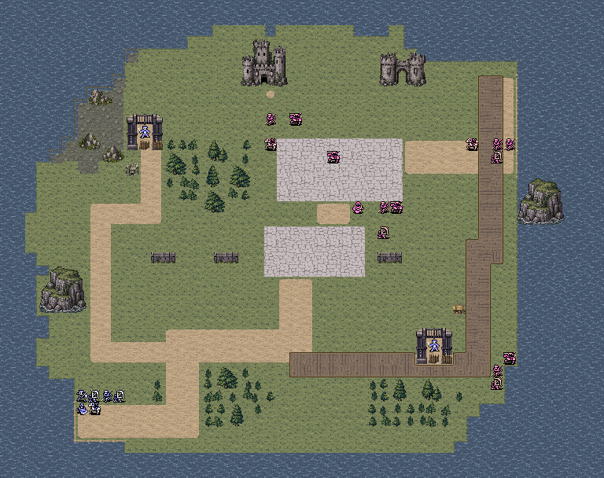
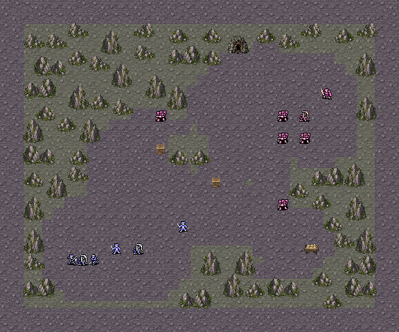
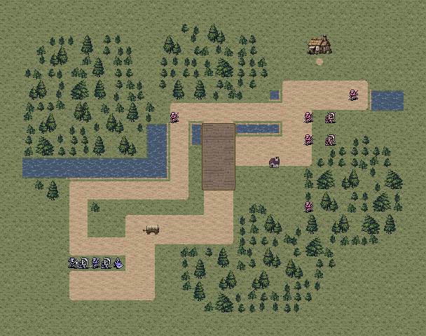
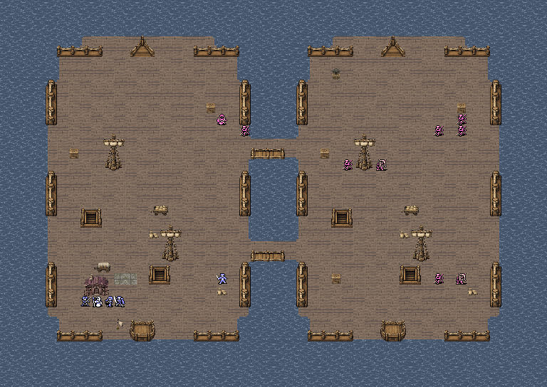
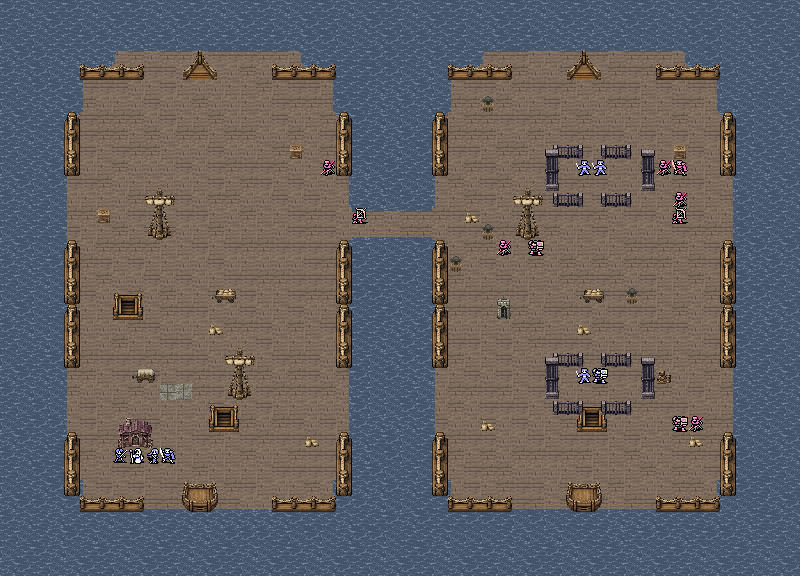
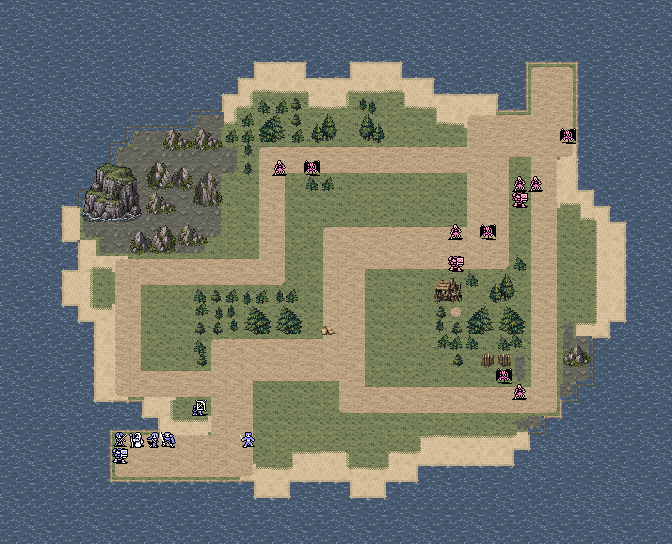
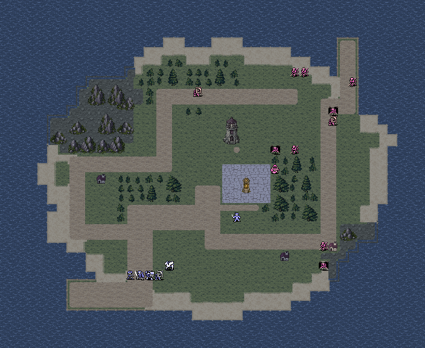
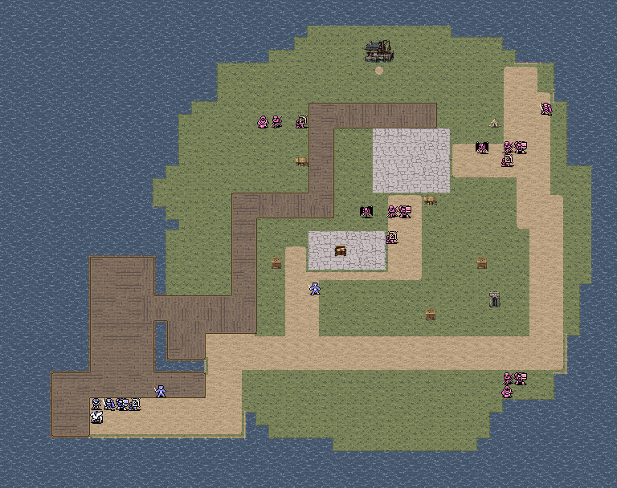
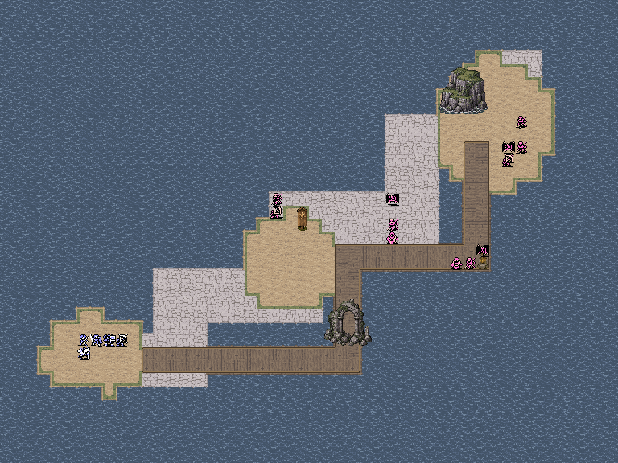
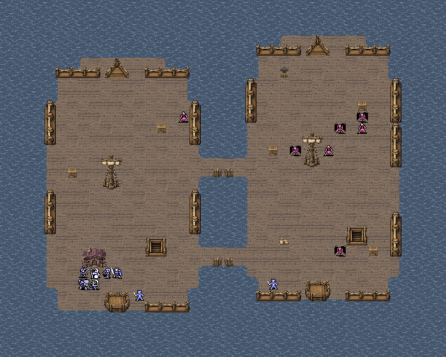
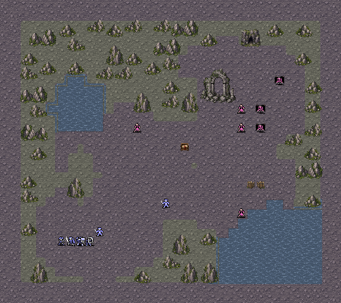
从建筑正面门前选择“访问”，读取信息并领取一次性奖励。单格营垒、舵楼哨位等可以站人，双方使用相同地形规则；恢复地形显示回合恢复量。
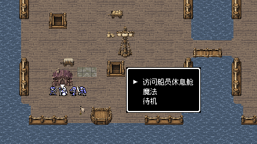
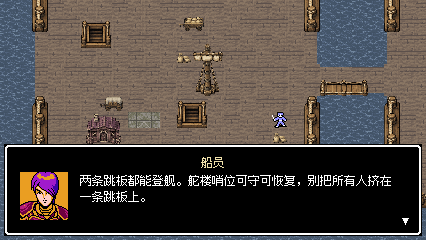
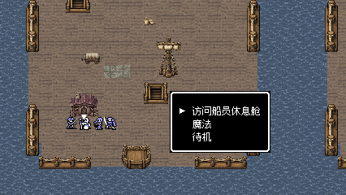
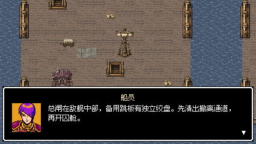
完整全景使用与地图匹配的实际视口，正常横屏视口为 426 × 240 原生像素。旧版进行中的战斗保留旧布局；返回整备重新进场或重试后采用本版地图。
建筑自带门洞，按入口位置设置一至两个门前交互格。海灯岛避难所采用自带入口的完整单格小屋。
0.3.3更新全部战场的视觉图层和光标显示，并补查目标说明；道路、碰撞、单位位置及战斗参数未变。原两轮通关记录为0.3.0验收，M11河道为0.3.1补测，0.3.3未重复完整通关。
0.3.4补查843项存档/交互规则、1557项地图资源检查；旧版进行中的6关保留原布局，正常重试或整备重新入场后采用新岗堡位置。原战斗数值、部署、主目标与道路宽度未改。
0.3.5：本关8张运行图更新，包含第5回合实际控制后离开旗点的蓝旗画面；没有修改人物位置或强制控制。859项状态检查、1585项地图资源检查、独立包27项检查通过。旧0.3.4外营战斗保持原布局，正常重试/整备重新入场采用新哨卡。
0.3.6重新捕获81张运行图；1645项地图资源和859项状态检查通过。全部15关除视觉字段外相同，旧图集3530格像素/编号完整保留；本轮没有重复完整战斗试玩。